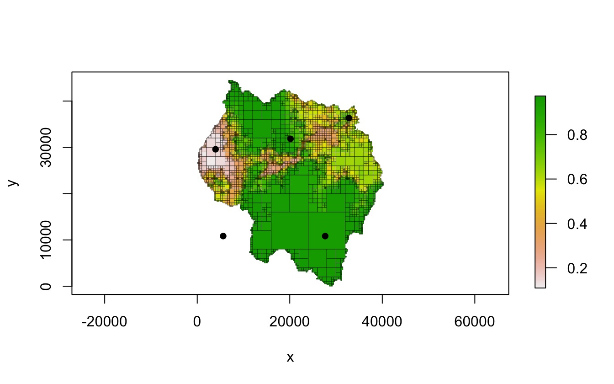
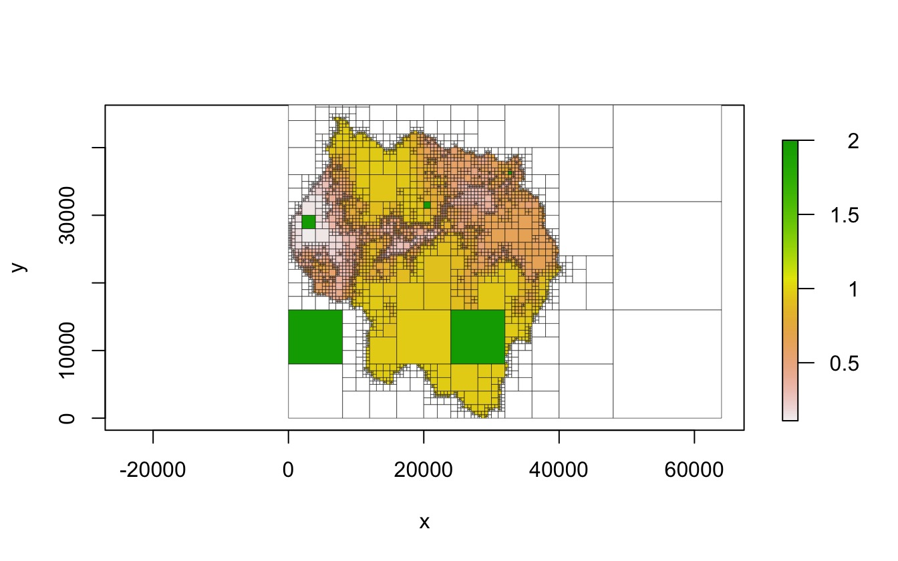
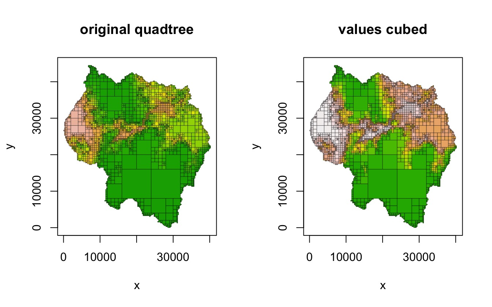
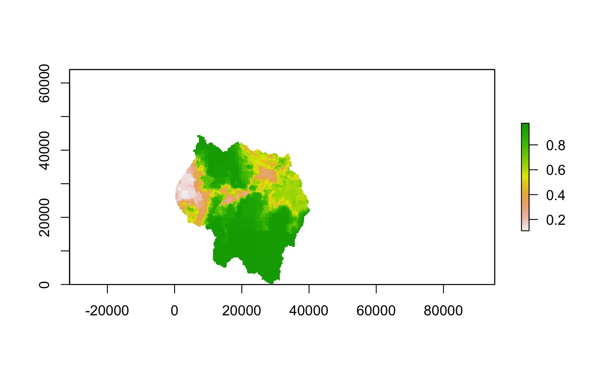

vignettes/quadtree-usage.Rmd
quadtree-usage.RmdThis vignette covers ways of interacting with a Quadtree object after it has been created - for example, extracting values and modifying values.
There are a number of functions for retrieving basic info about a Quadtree.
A basic summary of a quadtree can be shown by just typing the variable name or using the summary() function:
qt
#> class : Quadtree
#> # of cells : 4210
#> min cell size : 250
#> extent : 0, 64000, 0, 64000 (xmin, xmax, ymin, ymax)
#> crs : NA
#> values : 0.109, 0.974 (min, max)projection() can be used to get and set the projection of the Quadtree. In this case there is no projection, so an empty string is returned.
projection(qt)
#> [1] ""n_cells() returns the number of cells in the quadtree. It has one optional parameter, terminal_only - if TRUE, the number of cells of the quadtree that are terminal (i.e. have no children) is returned. If FALSE, the total number of nodes in the quadtree is returned.
extent() can be used to return the extent of the quadtree. It has one optional parameter original - if FALSE (the default), it returns the total extent covered by the quadtree. If TRUE, the function returns the extent of the original raster used to create the quadtree, before NA rows/columns were added to pad the dimensions. You may need to preface extent() with quadtree:: to avoid conflicts with the raster package.
Values can be ‘extracted’ at point locations using the extract() function. This function has one optional parameter - extents. If extents is FALSE (the default), then only the values at the point locations are returned. If extents is TRUE, then a matrix is returned that also returns the x and y limits of each cell in addition to the cell value.
pts <- cbind(x = c(5609, 3959, 20161, 27662, 32763),
y = c(10835, 29586, 31836, 10834, 36337))
plot(qt, crop = TRUE, border_lwd = .3, na_col = NULL)
points(pts, pch = 16)
quadtree::extract(qt, pts)
#> [1] NaN 0.1451094 0.8202500 0.9556426 0.6800000
quadtree::extract(qt, pts, extents = TRUE)
#> id xmin xmax ymin ymax value
#> [1,] 4339 0 8000 8000 16000 NaN
#> [2,] 1826 2000 4000 28000 30000 0.1451094
#> [3,] 3394 20000 21000 31000 32000 0.8202500
#> [4,] 4569 24000 32000 8000 16000 0.9556426
#> [5,] 1567 32500 33000 36000 36500 0.6800000In addition to extracting values from cells, it is possible to determine neighbor relationships between cells via the get_neighbors() function. Given a point, get_neighbors() returns the cells that neighbor the cell that the point falls in. Note that cells that are diagonal from each either (i.e. only touch at the corner) are considered to be neighbors.
get_neighbors(qt, as.numeric(pts[3,]))
#> id xmin xmax ymin ymax value
#> [1,] 975 19500 20000 32000 32500 0.8557500
#> [2,] 1047 21000 22000 32000 33000 0.7893750
#> [3,] 1046 20000 21000 32000 33000 0.8236875
#> [4,] 3295 19000 20000 31000 32000 0.9098125
#> [5,] 3301 19000 20000 30000 31000 0.9466250
#> [6,] 3396 20000 21000 30000 31000 0.8688750
#> [7,] 3395 21000 22000 31000 32000 0.8061875
#> [8,] 3397 21000 22000 30000 31000 0.8125625A key concept to understand is that Quadtree objects are pointers to C++ objects, and copying these objects simply by assigning them to a new variable makes a shallow copy rather than a deep copy. This is important to note because this differs from how R objects normally behave. For example, if I have a data frame named df1, I can make a copy of it by doing df2 <- df1. This makes a deep copy of df1 - if I were to modify df2, df1 would remain unchanged. This is not the case with Quadtree objects. The R object that users interact with is a pointer to a C++ object. If I were to attempt to make copy of a quadtree qt1 by doing qt2 <- qt1, this simply copies the pointer to the C++ object, so qt1 and qt2 point to the same object. Thus, if qt2 is modified (for example, by using a function like set_values() or transform_values()), qt1 will also be modified.
The copy() function can be used to make a deep copy of a Quadtree object. This is useful if the user wishes to make changes to a quadtree without modifying the original.
qt_copy <- copy(qt)
qt
#> class : Quadtree
#> # of cells : 4210
#> min cell size : 250
#> extent : 0, 64000, 0, 64000 (xmin, xmax, ymin, ymax)
#> crs : NA
#> values : 0.109, 0.974 (min, max)
qt_copy
#> class : Quadtree
#> # of cells : 4210
#> min cell size : 250
#> extent : 0, 64000, 0, 64000 (xmin, xmax, ymin, ymax)
#> crs : NA
#> values : 0.109, 0.974 (min, max)In the next section (“Modifying cell values”), this function is used in the examples to create copies of a quadtree before modifying it so that the original remains unchanged.
Two functions are provided for modifying cell values: set_values() and transform_values().
set_values() takes a matrix of points and associated values and changes the values of the cells the points fall in. Note that only the values of the terminal cells that the point falls in are changed.
qt2 <- copy(qt)
set_values(qt2, pts, rep(2, nrow(pts)))
plot(qt2, crop = TRUE, border_lwd = .3)
transform_values() uses a function to change all cell values. For example, we could use this function to cube all of the cell values:
qt3 <- copy(qt)
transform_values(qt3, function(x) x^3)
par(mfrow = c(1,2))
plot(qt, crop = TRUE, na_col = NULL, border_lwd = .3, zlim = c(0, 1),
legend = FALSE, main = "original quadtree")
plot(qt3, crop = TRUE, na_col = NULL, border_lwd = .3, zlim = c(0, 1),
legend = FALSE, main = "values cubed")
One of the disadvantages of using C++ classes via Rcpp is that the objects are not preserved between sessions. For example, we could save a Quadtree to a RData file using save(), but when we loaded it back in we would get an error.
qt_temp <- copy(qt)
filepath <- tempfile()
save(qt_temp, file = filepath)
load(filepath)
qt_temp
#> Error in (function (cond) : error in evaluating the argument 'x' in selecting a method for function 'extent': external pointer is not validThe quadtree package provides read and write functionality via the cereal C++ library, which is used to serialize C++ objects. read_quadtree() and write_quadtree() can be used to read and write Quadtree objects.
filepath <- tempfile()
write_quadtree(filepath, qt)
qt_read <- read_quadtree(filepath)
qt_read
#> class : Quadtree
#> # of cells : 4210
#> min cell size : 250
#> extent : 0, 64000, 0, 64000 (xmin, xmax, ymin, ymax)
#> crs : NA
#> values : 0.109, 0.974 (min, max)Functions are also provided for converting a Quadtree to different data types.
as_vector() returns the cell values as a numeric vector. It has one optional parameter - terminal_only. If TRUE (the default), only the values of the terminal cells are returned. If FALSE, the values of all cells (including those with children) are returned.
vec1 <- as_vector(qt)
length(vec1)
#> [1] 4210
summary(vec1)
#> Min. 1st Qu. Median Mean 3rd Qu. Max. NA's
#> 0.1090 0.4850 0.6275 0.6363 0.8139 0.9740 832
vec2 <- as_vector(qt, FALSE)
length(vec2)
#> [1] 5613
summary(vec2)
#> Min. 1st Qu. Median Mean 3rd Qu. Max. NA's
#> 0.1090 0.4917 0.6323 0.6446 0.8312 0.9740 832as_data_frame() converts the quadtree to a data frame. In the resulting data frame, each row represents a single cell and has columns describing the cell ID, x and y limits, value, level (i.e. node depth), the size of its smallest child, the ID of its parent, and whether it has children. As with as_vector(), there is one optional parameter called terminal_only - when TRUE (the default) only the terminal cells are returned, and when FALSE, all cells are returned.
df1 <- as_data_frame(qt)
dim(df1)
#> [1] 4210 10
head(df1)
#> id hasChildren level xmin xmax ymin ymax value smallestChildLength
#> 3 2 0 2 0 16000 48000 64000 NaN 16000
#> 4 3 0 2 16000 32000 48000 64000 NaN 16000
#> 7 6 0 4 0 4000 44000 48000 NaN 4000
#> 9 8 0 5 4000 6000 46000 48000 NaN 2000
#> 10 9 0 5 6000 8000 46000 48000 NaN 2000
#> 11 10 0 5 4000 6000 44000 46000 NaN 2000
#> parentID
#> 3 1
#> 4 1
#> 7 5
#> 9 7
#> 10 7
#> 11 7
df2 <- as_data_frame(qt, FALSE)
dim(df2)
#> [1] 5613 10
head(df2)
#> id hasChildren level xmin xmax ymin ymax value smallestChildLength
#> 1 0 1 0 0 64000 0 64000 0.7559473 250
#> 2 1 1 1 0 32000 32000 64000 0.7309282 250
#> 3 2 0 2 0 16000 48000 64000 NaN 16000
#> 4 3 0 2 16000 32000 48000 64000 NaN 16000
#> 5 4 1 2 0 16000 32000 48000 0.8131046 250
#> 6 5 1 3 0 8000 40000 48000 0.9623516 250
#> parentID
#> 1 -1
#> 2 0
#> 3 1
#> 4 1
#> 5 1
#> 6 4A Quadtree can also be converted to a raster using the as_raster() function. This function has one optional parameter named rast, which is used as the template for the output raster. If NULL (the default), a raster is automatically created, where the quadtree extent is used as the raster extent and the smallest cell in the quadtree is used to determine the resolution of the raster. Note that the value of a raster cell is determined by the value of the quadtree cell located at the centroid of the raster cell - thus, if a raster cell overlaps several quadtree cells, whichever quadtree cell the centroid of the raster cell falls in will determine the raster cell’s value. If the default value for rast is used, the raster cells will never overlap with more than one quadtree cell.
